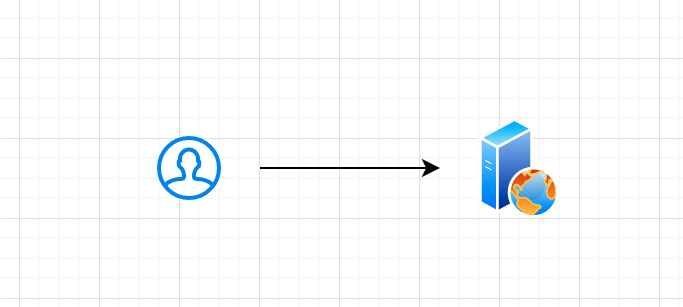
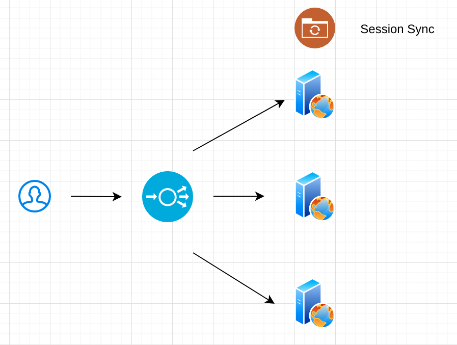
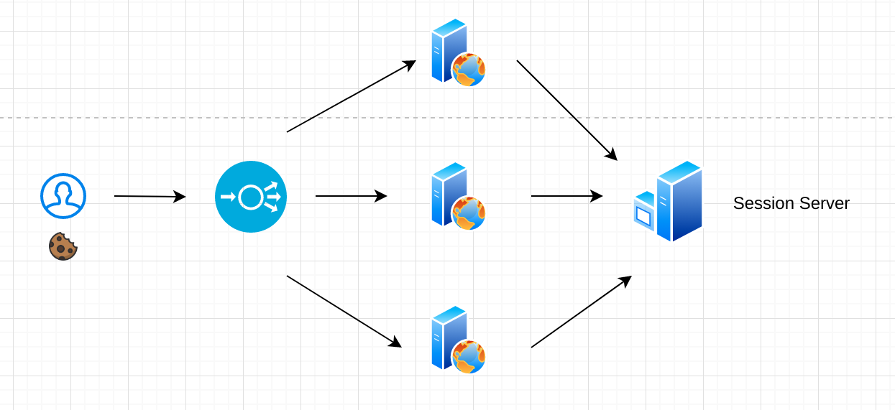
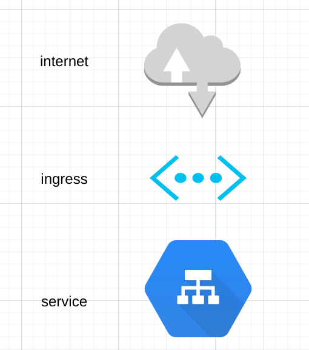
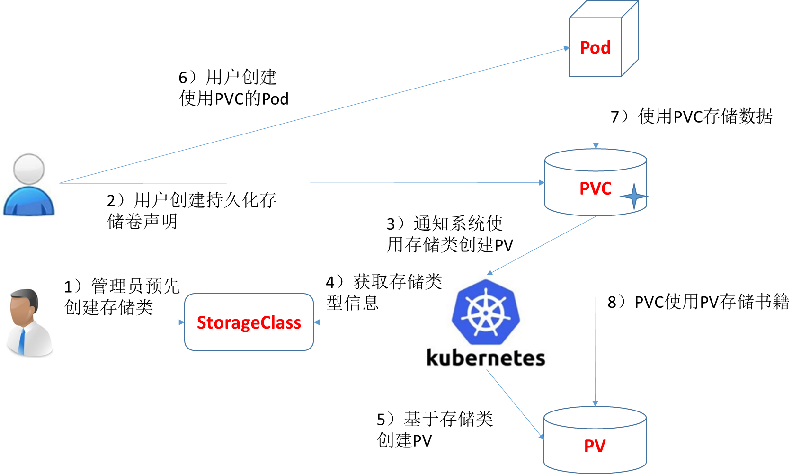

K8s course
Table of Contents
- 1. 课程目的
- 2. 课程安排
- 3. 了解 kubernetes 之前
- 4. Containers 与 Pods
- 5. Yaml 与 kubectl
- 6. Pod controllers
- 7. 有状态、无状态与 Cloud native
- 8. Service Loadbalanceing and Networking
- 9. Storage
- 10. WIP
- 11. 最佳实践
1 课程目的
- 可以独立安装 k8s 集群
- 可以简单运维 k8s 集群
- 了解 k8s 组件与代码结构
- 对云计算及生态有初步认识
- 具备通过 ckad 的能力
1.1 进阶要求
- 可以实现一个 CNI/CRD/CCM
- 成为 k8s contributor
2 课程安排
地点:会议室 时间:每周五下午 16:00-17:00 时间安排: 45min(讲解) + 15min(答疑) 作业形式: 问卷与实际操作
3 了解 kubernetes 之前
3.1 课程大纲
- 操作系统基础
- 简介 docker 与 container
- docker 与虚拟机的区别
- 认识什么是 kubernetes
3.2 Cgroup、Container 与 OCI
3.2.1 cgroups & namespaces & chroot & systemd
3.2.2 Container 的前世今生
- 1979 — chroot 一切的开始
- 2000 — FreeBSD Jails 支持进程沙盒
- 2001 — Linux VServer 加入 security context
- 2004 — Solaris Containers 支持在 x86 和 SPARC 系统
- 2005 — OpenVZ IPC 与设备的隔离
- 2006 — Process Containers kernel 2.6.24
- 2008 — LXC 第一个最完善的 Linux 容器管理器的实现方案;现在容器技术的雏形
- 2011 — Warde CloudFoundry 支持多个操作系统
- 2013 — LMCTFY Let Me Contain That For You Google libcontainer 的前身
- 2013 — Docker images swarm 集大成者
- 2014 — Rocket CoreOS
- 2016 — Windows Containers Hyper-v
- 2017 — Pouch 富容器 Alibaba
- 2018 — Podman without of daemon
- 2018 — WIndows Containers Windows-base
3.2.3 OCI
open container initiative5
Linux 基金会制定一个开放的工业化标准：容器运行时标准 （runtime spec）和 容器镜像标准（image spec）
- image spec 文件系统 manifest 文件 index 文件
- runtime spec Container ID PID 容器文件目录 容器创建 容器进程启动 容器暂停 容器暂停信号捕获 容器的生命周期: init creating created running stopped
3.2.4 docker 中容器的创建

3.3 Docker 与虚拟机
3.3.1 主流虚拟机的原理
3.3.2 容器与虚拟机
容器本身是虚拟化技术中的一种,作为最轻量级的虚拟化方案出现
但容器与虚拟机有本质上的区别
容器实际上是一个进程，而虚拟机则是一个完整的操作系统
3.4 kubernetes 是什么
Production-Grade Container Scheduling and Management 这是 kubernetes github 仓库上对这个项目的描述
3.4.1 我们为什么需要编排
我们不妨了解一下小明的故事
- 小明是一个开发者
小明是一个开发者，这一天他想到了一个点子，他做了一个静态的网站，现在他想把网站上线。 于是他将代码拷贝到了租赁的服务器上运行，因为他有三个服务器，他不想每次都把改动传递很多次.
于是他想到了 Docker,他写了一个 Dockerfile 将网站打包成了 Docker 镜像，传到了镜像仓库， 他每次只要到三个服务器上更新容器的镜像就好了
- 小明的网站提供其他的服务了
小明的网站提供其他的服务了，小明的网站现在不仅仅是一个静态页面了，现在小明需要爬取一些数据，然后展示出来， 于是小明现在有两个服务：一个展示网站，一个用来爬取数据的服务。 小明遇到了问题:展示网站怎么连接到爬取数据的服务上，
于是小明将容器暴露了相应的端口用于内部服务的访问
- 小明的业务又扩展了
小明的业务又扩展了，小明现在需要将爬取所有的数据存下来，放便做统计与查询。
小明将本地的目录挂载到了容器目录中，于是所有的数据就都保存在了本地。
- 小明的业务发展的特别迅速
小明的业务发展的特别迅速，他有了几十倍的用户了，原有的三台服务器无法承受过大的压力，于是小明又多租了 17 台服务器， 这时小明遇到了几个问题：每一台机器存储的数据无法同步，而且现在每做一次改动都要改动到 20 台服务器上，小明觉得太麻烦了
于是小明将几台机器做成了 NFS 的服务器，然后所有的容器都挂载 NFS 的目录进行存储，又使用了一些批量处理工具。小明对自己很满意。
- 小明的服务间歇性的被冲跨了
小明的服务间歇性的被冲跨了，小明突然发现自己的服务在每天晚上凌晨左右会有几台被巨大的请求冲垮，小明现在无力负担起更多的服务器了， 小明只能运营商处购买负载均衡服务，试图将流量均匀的分配到不同的机器上。这样过了几天，小明发现有许多用户抱怨内容出现丢失了， 小明经过排查发现，由于 DNS 的原因之前的每个用户一般都被会到特定的几台机器上，由于 NFS 挂载的不是相同的目录，造成目录之间数据 不一致。现在用户的请求统一经过运营商的负载均衡，导致用户的内容丢失。在加上运营商机器并不是很稳定，导致服务器经常失连。 小明已经陷入了深深的运维漩涡当中，小明不想再维护了。
3.4.2 kubernetes 的历史
kubernetes 由 Google 内部的编排系统 Borg 演化出来
2014 年 6 月揭牌
2015年7月22日K8S迭代到 v 1.0并正式对外公布
如今已经正式版本已到 1.16.3
3.5 kubernetes 生态与社区
3.5.2 kubernetes 社区
https://github.com/kubernetes/kubernetes
| Project | contributors | commit | issue | PR | members | release | star | fork |
|---|---|---|---|---|---|---|---|---|
| Docker | 1845 | 38049 | 3673 | 197 | 20 | 198 | 55.8k | 16.1k |
| Kubernetes | 2378 | 86276 | 2244 | 1079 | 529 | 586 | 60.8k | 21.5k |
| Tidb | 372 | 9834 | 1086 | 136 | 63 | 81 | 21.7k | 3.3k |


3.6 课后作业
1.安装 docker,并运行一个 nginx
2.给一个容器设置 –cpus –cpuset-cpus 并观察 cpu 的使用
3.一个四核的机器上设置 –cpus=2.5 –cpuset-cpus="0,1" 那么容器最多可以占用多少 cpu 资源?为什么？
请将 1 、3 两个问题的答案发送至邮箱,截至日期为下次课程开始之前
4 Containers 与 Pods
4.1 课程大纲
[ ]了解 CRI 以及 CRI 的意义，从而了解 k8s 的方向[ ]明白 pods 与 containers 的区别与关系[ ]了解 pods 的原理[ ]初识 k8s yaml
4.2 CRI

4.2.1 CRI 的意义
kubernetes 将其可以剥离开的部分转换为接口对外开放出去
1.减少核心的代码可以保证代码稳定性与产品质量
2.k8s 不依赖于某几种场景，这种方式带给 k8s 更多的可能
CRI 就是其开放出去的一个，CRI (container runtime interface)
CRI 的出现是对 Docker 的一个巨大打击 CRI 出现在 kubernetes 1.5 的版本中 2016 年 12 月，而正是此时，docker 公司正在进行他的商业化的第一步
Docker 的最大优势在于庞大的用户与及其优秀的生态,许多人都是从 Docker 才了解了容器，包括现在仍然有许多人提起容器仅能想起 Docker
kubernetes 一定不会将自己与 Docker 捆绑在同一条船上，CRI 出现之前尚可称为同床异梦,而在这之后则是真正的分居
kubernetes 在此刻已经展现了自己的爪牙
4.2.2 CRI 的接口
CRI Proto6
service RuntimeService { rpc Version(VersionRequest) returns (VersionResponse) {} rpc RunPodSandbox(RunPodSandboxRequest) returns (RunPodSandboxResponse) {} rpc StopPodSandbox(StopPodSandboxRequest) returns (StopPodSandboxResponse) {} rpc RemovePodSandbox(RemovePodSandboxRequest) returns (RemovePodSandboxResponse) {} rpc PodSandboxStatus(PodSandboxStatusRequest) returns (PodSandboxStatusResponse) {} rpc ListPodSandbox(ListPodSandboxRequest) returns (ListPodSandboxResponse) {} rpc CreateContainer(CreateContainerRequest) returns (CreateContainerResponse) {} rpc StartContainer(StartContainerRequest) returns (StartContainerResponse) {} rpc StopContainer(StopContainerRequest) returns (StopContainerResponse) {} rpc RemoveContainer(RemoveContainerRequest) returns (RemoveContainerResponse) {} rpc ListContainers(ListContainersRequest) returns (ListContainersResponse) {} rpc ContainerStatus(ContainerStatusRequest) returns (ContainerStatusResponse) {} rpc ExecSync(ExecSyncRequest) returns (ExecSyncResponse) {} rpc Exec(ExecRequest) returns (ExecResponse) {} rpc Attach(AttachRequest) returns (AttachResponse) {} rpc PortForward(PortForwardRequest) returns (PortForwardResponse) {} rpc UpdateRuntimeConfig(UpdateRuntimeConfigRequest) returns (UpdateRuntimeConfigResponse) {} rpc Status(StatusRequest) returns (StatusResponse) {} }
这里有了个新的概念 PodSandbox 就是我们下面要说到的 Pod
4.3 容器与 Pod
4.3.1 Pod 是什么

Pod 是 kubernetes 中部署与调度的最小单元
听起来是不是似曾相识
4.3.2 Pod 里面有什么

Pod 内的容器共享网络与存储
这意味着在同一个 Pod 中的容器有着相同的 IP 与端口
4.3.3 Pod 实现原理
pause-container 是实现 Pod 共享 namespace 的基础
在 linux 中，当你启动一个进程的时候，子进程自动继承父进程的 namespace
当你使用 unshare 的方式时会创建一个新的 namespace
pause-container 就是做这个事情的，当启动一个 Pod 时，kubernetes 创建了一个 pause 容器
并单独的创建了一个 net namespace，然后将其余的容器加入到了这个 pause 容器创建的 namespace 中
Pod 中可以配置一个参数 shareProcessNamespace 控制是否可以共享 PID
当你的 Pod 没有启用该参数时，在 container 中可以发现 pid 1 是 container commands
当启用时， pid 1 是 pause
shareProcessNamespace 会用在一些特定的场景
1.有一些镜像在 PID 不是 1 无法启动例如 systemd
2./proc 下面文件共享
3.文件系统共享 /proc/$pid/root
4.3.4 init containers
在 Pod 中,你无法控制两个 container 的启动顺序，但是所有的 container 在启动之前都会先启动 init containers
init containers 可以有多个，init containers 是有顺序的
init containers 使用的是 linux namespace secrets
init containers 场景
1.加载一些工具
2.可以作为应用的部署器
4.3.5 POD 的生命周期
| value | Description |
|---|---|
| Pending | The Pod has been accepted by the Kubernetes system, but one or more of the Container images has not been created. This includes time before being scheduled as well as time spent downloading images over the network, which could take a while. |
| Running | The Pod has been bound to a node, and all of the Containers have been created. At least one Container is still running, or is in the process of starting or restarting |
| Succeeded | All Containers in the Pod have terminated in success, and will not be restarted. |
| Failed | All Containers in the Pod have terminated, and at least one Container has terminated in failure. That is, the Container either exited with non-zero status or was terminated by the system. |
| Unknown | For some reason the state of the Pod could not be obtained, typically due to an error in communicating with the host of the Pod |

4.3.6 Pod 的回收
Pod 的回收在 kubernetes 中面临这样几个问题:
1.清理 Pod 这个资源
2.清理 Pod 关联的其他资源
3.清理 Pod 中的容器
简单的来看是这样的一个流程,但这其中还涉及 kubelet 的垃圾回收机制, 会在之后的章节中详细说明
客户端请求删除 Pod –>
apiserver 更新 Pod 信息 –>
kubelet 优雅释放 Pod 资源 –>
kubelet 请求删除 Pod –>
apiserver 删除 etcd 中 Pod 信息–>
kubelet完成最终Pod的资源清理
4.3.7 multi Pod 的实际场景
 sidecar 到 service mesh
sidecar 到 service mesh
如果说 kubernetes 管理你的基础设施 service mesh 则管理应用的全部
比如说 服务发现 融断 负载均衡 灰度发布甚至安全

4.4 课后作业
1.简单论述 OCI 与 CRI 的区别
2.使用提供的工具模拟一个 Pod tools:
- unshare
- docker run
images:
- nginx
- daocloud.io/daocloud/dao-2048
- gcr.azk8s.cn/google_containers/pause:3.1
config:
cat <<EOF >> nginx.conf error_log stderr; events { worker_connections 1024; } http { access_log /dev/stdout combined; server { listen 8080 default_server; server_name example.com www.example.com; location / { proxy_pass http://127.0.0.1:80; } } } EOF
1.nginx 不暴露端口
2.pause 暴露端口 30001:8080
3.2048 不暴露端口
4.当访问本地的 30001 端口时可以出现 2048 游戏界面
5 Yaml 与 kubectl
5.1 课程大纲
[ ]了解 kubernetes yaml 的格式[ ]kubectl 常用的命令[ ]kubectl 的使用g
5.2 kubernetes yaml
apiVersion: v1 kind: Pod metadata: annotations: cni.projectcalico.org/podIP: 192.168.159.56/32 labels: app: nginx name: nginx-pod-test1 namespace: default spec: containers: - image: nginx:1.7.9 imagePullPolicy: Always name: nginx ports: - containerPort: 80 protocol: TCP resources: requests: memory: "30Mi" limits: memory: "200Mi" restartPolicy: Always schedulerName: default-scheduler terminationGracePeriodSeconds: 30 tolerations: - effect: NoExecute key: node.kubernetes.io/not-ready operator: Exists tolerationSeconds: 300 - effect: NoExecute key: node.kubernetes.io/unreachable operator: Exists tolerationSeconds: 300
5.2.1 annotation
注释以 kv 的方式存储
有最大长度限制
5.2.2 label && selector
用来调度与标明身份
是 kubernetes 判断身份的基础
5.2.3 namespace
kubectl get ns
1.default
2.kube-system kubernetes 系统的
3.kube-public 用来对集群所有用户可读的
5.2.4 apiVersion
kubernetes 采用了标准的 REST API, 外部的用户命令与组件之间的通信，经过 apiserver 的部分都会使用 RESTAPI
5.2.5 toleration && taint
kubectl taint nodes node1 key=value:NoSchedule
给节点 node1 打了一个污点 key value effact 所有的 pod 都不会被调度到这台机器上，除非存在相应的容忍
5.3 kubectl
5.3.1 kubectl get
kubectl get po $podname -o wide
5.3.2 kubectl apply
kubectl apply -f *.yaml
5.3.3 kubectl logs
kubectl logs -f $podname [-c]
5.3.4 kubectl exec
kubectl exec -it [-p] $podname [-c]
5.3.5 kubectl edit
kubectl edit $resource $name
5.4 作业
apiVersion: v1 kind: Pod metadata: name: memory-demo-2 namespace: mem-example spec: containers: - name: memory-demo-2-ctr image: polinux/stress resources: requests: memory: "50Mi" limits: memory: "100Mi" command: ["stress"] args: ["--vm", "1", "--vm-bytes", "250M", "--vm-hang", "1"]
1.描述启动该 yaml 时出现了什么情况(报错与 pod 状态)，并解释为什么
2.修改这个 yaml 使得该 pod 可以运行
6 Pod controllers
6.1 课程大纲
[ ]了解 pod 在 k8s 中如何被控制[ ]了解 k8s 常用的 poc controller 以及作用
6.2 Replicaset (rs)
rs 是用来保证 pod 运行数量的
rs 提供了基础的管理 pod 的能力，保证符合预期数量的 pod 正常启动
现在的 rs 都是伴随着 deploy 进行使用,不建议手动进行更改
kubect get rs ××× -o yaml
apiVersion: apps/v1 kind: ReplicaSet metadata: annotations: deployment.kubernetes.io/desired-replicas: "5" deployment.kubernetes.io/max-replicas: "7" deployment.kubernetes.io/revision: "5" deployment.kubernetes.io/revision-history: "3" creationTimestamp: "2019-12-26T11:02:23Z" generation: 7 labels: app: nginx pod-template-hash: 765bd9f9c test: "123" name: nginx-deployment-765bd9f9c namespace: default ownerReferences: - apiVersion: apps/v1 blockOwnerDeletion: true controller: true kind: Deployment name: nginx-deployment uid: 2f0afdde-f57e-42df-9f57-781fd5cb2391 resourceVersion: "4850637" selfLink: /apis/apps/v1/namespaces/default/replicasets/nginx-deployment-765bd9f9c uid: fdbce8f5-0e5a-418f-8ffb-68e33901da1c spec: replicas: 5 selector: matchLabels: app: nginx pod-template-hash: 765bd9f9c template: metadata: creationTimestamp: null labels: app: nginx pod-template-hash: 765bd9f9c test: "123" spec: containers: - image: nginx:1.7.9 imagePullPolicy: Always name: nginx ports: - containerPort: 80 protocol: TCP resources: {} terminationMessagePath: /dev/termination-log terminationMessagePolicy: File dnsPolicy: ClusterFirst restartPolicy: Always schedulerName: default-scheduler securityContext: {} terminationGracePeriodSeconds: 30 status: availableReplicas: 5 fullyLabeledReplicas: 5 observedGeneration: 7 readyReplicas: 5 replicas: 5
6.3 ReplicationController (rc)
rc 是时代的眼泪 早期用来对 pod 的控制使用 rc 完成，但现在有了更高级的 deploy
6.4 Deployments (deploy)
deploy 是 k8s 中很重要的一个概念，可以看作无状态应用的管理器
deploy 提供了对 rs 与 pod 的声明式的更新
先来看这个样一个 yaml
apiVersion: apps/v1 kind: Deployment metadata: name: nginx-deployment spec: selector: matchLabels: app: nginx replicas: 2 template: metadata: labels: app: nginx spec: containers: - name: nginx image: nginx:1.7.9 ports: - containerPort: 80
这里创建了一个 名为 nginx-deployment 的 deploy
这时你可以找到这个 deploy 对应的 rs 与 pod
apiVersion: apps/v1 kind: ReplicaSet metadata: annotations: deployment.kubernetes.io/desired-replicas: "1" deployment.kubernetes.io/max-replicas: "2" deployment.kubernetes.io/revision: "2" creationTimestamp: "2019-11-05T01:34:29Z" generation: 10 labels: app: nginx pod-template-hash: 5b7b9ccb95 name: nginx-deployment-5b7b9ccb95 namespace: default ownerReferences: - apiVersion: apps/v1 blockOwnerDeletion: true controller: true kind: Deployment name: nginx-deployment uid: 2f0afdde-f57e-42df-9f57-781fd5cb2391 resourceVersion: "3898865" selfLink: /apis/apps/v1/namespaces/default/replicasets/nginx-deployment-5b7b9ccb95 uid: c87ebc79-38d3-4ce2-b581-c63851d7adef spec: replicas: 1 selector: matchLabels: app: nginx pod-template-hash: 5b7b9ccb95 template: metadata: creationTimestamp: null labels: app: nginx pod-template-hash: 5b7b9ccb95 spec: containers: - image: nginx:1.7.9 imagePullPolicy: Always name: nginx ports: - containerPort: 80 protocol: TCP resources: {} terminationMessagePath: /dev/termination-log terminationMessagePolicy: File dnsPolicy: ClusterFirst restartPolicy: Always schedulerName: default-scheduler securityContext: {} terminationGracePeriodSeconds: 30 status: availableReplicas: 1 fullyLabeledReplicas: 1 observedGeneration: 10 readyReplicas: 1 replicas: 1
rs 中有一个很重要的字段叫做 ownerReferences 标识这个 rs 是属于哪一个 deploy 的
同样你可以在 pod 中也找到相应的字段,来标识这个 pod 是受到哪个 rs 管理的
selector 的标签用来标识最终会控制哪个 pod
我们会发现在 rs 中，除了我们设置的标签外还有一个新的标签 pod-template-hash
这个标签用来保证一个 deploy 所对应的 rs 不会发生重叠
6.4.1 更新一个 deploy
当更改了 deploy 中的资源时，deploy 就会进行更新,deploy 的更新同时会更新所属的 rs 与 pod
6.4.2 滚动发布
kubectl rollout
回滚可以针对 deploy daemonset statefulset
当更改一个资源时可以使用 –record 对当前的这条命令进行记录
kubectl appf -f ***.yaml --record
使用 history 可以看到一个 deploy 的变化记录
kubectl rollout history deploy nginx-deployment
然后使用 undo 进行回滚, 使用 –to-revision 可以选择回滚到的版本
kubectl rollout undo deploy nginx-deployment
6.4.3 扩展
使用 scale 可以 deploy 的副本数进行更改
kubectl scale deploy nginx-deployment
同样也是对 rs 的更改
6.4.4 自动扩展
HPA 的机制较为复杂会在后面的章节详细讲解
6.5 Jobs
job 主要用来执行一次性的任务
在 k8s 中 job 有几种不同的类型使用 spec.parallelism 和 spec.completions 进行配置
completions 标识几个 pod 运行结束后 job 进入到完成状态
parallelism 标识同时有几个 pod 一起运行
6.5.1 不同的 job
1.非并行的 job
2.固定结束次数的 job
3.带有工作队列的并行 job
| Job类型 | 使用示例 | 行为 | completions | Parallelism |
|---|---|---|---|---|
| 一次性Job | 数据库迁移 | 创建一个Pod直至其成功结束 | 1 | 1 |
| 固定结束次数的Job | 处理工作队列的Pod | 依次创建一个Pod运行直至completions个成功结束 | 2+ | 1 |
| 固定结束次数的并行Job | 多个Pod同时处理工作队列 | 依次创建多个Pod运行直至completions个成功结束 | 2+ | 2+ |
| 并行Job | 多个Pod同时处理工作队列 | 创建一个或多个Pod直至有一个成功结束 | 1 | 2+ |
6.6 CronJob
cronjob 以类似 crontab 的方式进行调度 job
6.6.1 什么是 crontab
https://linux.die.net/man/1/crontab
推荐一个网站 https://crontab.guru/ 方便更好的理解 crontab
6.7 DaemonSet (ds)
daemonset 确保集群内的每一台机器上都运行 ds 下的 pod
使用场景：
1.有一些集群存储的 daemon 例如:glusterd, ceph
2.每台机器上都需要有的日志收集与监控 logstash datadog
3.网络方案中需要部署在每台机器上的实例 calico
6.7.1 如果 ds 遇到 taint 如何处理？
k8s 会自动添加 tolearation 到 ds 的 pod 上
| toleration key | effect | version | description |
|---|---|---|---|
| node.kubernetes.io/not-ready | NoExecute | 1.13+ | DaemonSet pods will not be evicted when there are node problems such as a network partition. |
| node.kubernetes.io/unreachable | NoExecute | 1.13+ | DaemonSet pods will not be evicted when there are node problems such as a network partition. |
| node.kubernetes.io/disk-pressure | NoSchedule | 1.8+ | |
| node.kubernetes.io/memory-pressure | NoSchedule | 1.8+ | |
| node.kubernetes.io/unschedulable | NoSchedule | 1.12+ | DaemonSet pods tolerate unschedulable attributes by default scheduler. |
| node.kubernetes.io/network-unavailable | NoSchedule | 1.12+ | DaemonSet pods, who uses host network, tolerate network-unavailable attributes by default scheduler. |
6.8 课后作业
1.创建一个 nginx 的 deploy 名称为 nginx-c4 有两个副本
2.更改 1 中创建的 deploy 的副本数为 4,并将镜像改为 daocloud.io/daocloud/dao-2048
3.回滚至两个副本的版本
4.观察在回滚的过程中 deploy annotation 的变化
7 有状态、无状态与 Cloud native
7.1 课程大纲
[ ]可以分辨有状态的服务与无状态的服务[ ]了解 StatefulSet 的意义并可以在 k8s 集群中进行管理[ ]对 Cloud-native 的意义有一个基本的认识
7.2 无中生有
7.2.1 什么是幂等性
本章所讲的幂等性仅指 RESTful API 的 HTTP
HTTP 中的幂等性指的是一次请求与多次请求同一个资源会产生相同的副作用
简单来讲，对一个 API 进行多次操作，是不是每次对系统的影响都是都是相同的
| 方法 | 幂等 | 举例 |
|---|---|---|
| GET | 是 | 获取编号为 123 的资源 |
| DELETE | 是 | 删除编号为 123 的资源 |
| POST | 否 | 在目录 /texts 下创建一个资源 |
| PUT | 是 | 更改或创建 /textx/123 的详情 |
7.2.2 无状态服务与有状态服务
- 小明是一个 web 开发者
小明的朋友写了一个购物网站，邀请小明进行试用，小明输入用户名与密码进行登录
然后小明想查看自己的购物车，发现又要进行登录，不仅如此每一次请求都要进行登录
小明脑子里有一个大大的问号
- 你知道这个世界上有一个东西叫做 session 吗

用户每次登录都会在服务器端保留一个 session 记录，用于后续的验证身份
- 我的服务器撑不住了
由于用户越来越多，一台机器无法保存过多的 session，于是小明的朋友增加了两台服务器然后在服务器间进行 session 的同步

- 请使用万兆网络 + SSD
小明的朋友发现了许多问题
1.多个服务之间的 session 同步造成了数据冗余，同时会消耗带宽
2.如何保证 session 同步的快速与准确
小明的朋友甚至考虑上一套 TIDB
可惜没有万兆网络与 SSD 无奈之下放弃了这套方案转而向小明求助
- 你听说过烘焙吗
小明给朋友提出了一个更加靠谱的方案
cookie + session

1.用户第一进行登录时会在服务器端生成一个 session 然后设置一个过期时间, 同时给客户端创建一个加密后的 cookie
2.之后用户登录，会在请求头带上 cookie 的相关信息将请求发送到应用服务器
3.应用服务器进行接密后，然后进行校验后进行下一步操作
7.3 StatefulSet (sts)
StatefulSet 是 kubernetes 中为了管理有状态的服务而设计出的一种资源
7.3.1 特点
StatefulSet 所管理的 pod 拥有固定的名字 同时会按照顺序启动
在与 service 产生交互时，使用的是 healess service
直接将 pod name 注册到 dns server，没有负载均衡
7.3.2 场景
1.固定 POD IP 2.需要绑定存储 3.有序的扩展 4.有序的滚动升级
7.3.3 example
microk8s 需要启动 storage
apiVersion: storage.k8s.io/v1 kind: StorageClass metadata: name: local-storage provisioner: kubernetes.io/no-provisioner volumeBindingMode: WaitForFirstConsumer --- apiVersion: v1 kind: PersistentVolume metadata: name: local-pv spec: capacity: storage: 10Gi accessModes: - ReadWriteOnce persistentVolumeReclaimPolicy: Retain storageClassName: local-storage local: path: /mnt/disk/vol1 nodeAffinity: required: nodeSelectorTerms: - matchExpressions: - key: kubernetes.io/hostname operator: In values: - vagrant --- apiVersion: v1 kind: PersistentVolume metadata: name: local-pv-2 spec: capacity: storage: 10Gi accessModes: - ReadWriteOnce persistentVolumeReclaimPolicy: Retain storageClassName: local-storage local: path: /mnt/disk/vol2 nodeAffinity: required: nodeSelectorTerms: - matchExpressions: - key: kubernetes.io/hostname operator: In values: - vagrant --- apiVersion: v1 kind: Service metadata: name: nginx labels: app: nginx spec: ports: - port: 80 name: web clusterIP: None selector: app: nginx --- apiVersion: apps/v1 kind: StatefulSet metadata: name: web spec: serviceName: "nginx" replicas: 2 selector: matchLabels: app: nginx template: metadata: labels: app: nginx spec: containers: - name: nginx image: nginx:latest ports: - containerPort: 80 name: web volumeMounts: - name: www mountPath: /usr/share/nginx/html volumeClaimTemplates: - metadata: name: www spec: accessModes: [ "ReadWriteOnce" ] storageClassName: local-storage resources: requests: storage: 1Gi
7.4 Cloud-Native
7.4.1 DevOps
DevOps是软件开发人员与IT运营部门之间的协作，其目标是不断交付可解决客户挑战的高质量软件。
它具有创造一种文化和环境的潜力，在该文化和环境中，可以快速，频繁且更一致地进行软件的构建，测试和发布。
在敏捷产品开发实践的支持下，持续交付意味着通过自动化将小批软件不断交付生产。
持续交付使发布变得迟钝而可靠，从而组织可以以更低的风险频繁交付，并更快地从最终用户那里获得反馈。
7.4.2 Microservices
微服务是一种将应用程序开发为一组小服务的体系结构方法。每个服务都实现业务功能，在其自己的流程中运行并通过HTTP API或消息传递进行通信。
每个微服务都可以独立于应用程序中的其他服务进行部署，升级，扩展和重新启动，通常作为自动化系统的一部分，从而可以对实时应用程序进行频繁更新而不会影响最终客户
7.4.3 Container
与标准虚拟机（VM）相比，容器提供了效率和速度。使用操作系统（OS）级虚拟化，单个OS实例可以动态地划分到一个或多个隔离的容器中，
每个容器具有唯一的可写文件系统和资源配额。在单个VM中创建和销毁容器的低开销以及高包装密度使容器成为部署单个微服务的理想计算工具
7.5 课后作业
1.部署 example 中的 yaml 2.查看每个 pod 的 hostname
for i in 0 1; do kubectl exec web-$i -- sh -c 'hostname'; done
3.启动一个新的 deploy 在新启动的 pod 内部查看 dns 记录并对比相应的 sts pod 的信息
nslookup web-1.nginx
4.将副本数改为 0, pod 在销毁时是否有顺序?
8 Service Loadbalanceing and Networking
8.1 课程大纲
[ ]了解 kubernetes service 的相关概念[ ]了解 ingress 的相关概念[ ]简单了解 kubernetes 中的 dns
8.2 为什么在 kubernetes 中需要 service
8.2.1 今天不说小明的故事，今天来讲一个工具人的故事
工具人有几个很重要的特点: 1.用完就扔
2.有事情才来看看你，没事情从来不看你
3.随叫随到
4.可替代性很强
8.2.2 Pod: 正是在下
Pod 具有工具人的绝大部分的特点，但是 Pod 有很大的问题，在通常情况下 pod 每次重新启动后，
Pod 的 IP 会发生变化，在除了 statefulset 管理的 pod，名字也会发生改变
这样就有一点不舒服了，一个工具人还想让我每次再找一遍？
8.2.3 如何找到合适的工具人
service 就是用来找工具人的一种绝佳方式
kubernetes 中有几种办法可以连通 pod 而不关心 pod 是否被重启过
1.通过 service 进行访问
2.直接通过 Dns 进行访问 (headless service)
3.固定 Pod ip
8.3 Service 如何找到 pod 的
apiVersion: apps/v1 kind: Deployment metadata: name: my-nginx spec: selector: matchLabels: run: my-nginx replicas: 2 template: metadata: labels: run: my-nginx spec: containers: - name: my-nginx image: nginx ports: - containerPort: 80 --- apiVersion: v1 kind: Service metadata: name: my-nginx labels: run: my-nginx spec: type: ClusterIP ports: - port: 30010 targetPort: 80 protocol: TCP selector: run: my-nginx
通过 selector, 与其他的资源一样, service 也是通过 selector 与 label 的方式连接到 pod 上
service 也可以连接到非 pod 的其他资源上,这种情况下是不会创建 endpoint 的
8.3.1 endpoint 与 Endpoint slices
- endpoint
endpoint 中保存了 pod 的 ip 端口,所在机器, namespace 的信息
可以说 endpoint 的才是实际上对 pod 的网络信息进行记录与及时更改的资源
而 service 则是对 kubernetes 网络连接的抽象
kubectl get ep
在这里你可以发现 service 与 endpoint 的是一一对应的,那么他们是怎么进行关联的?
- endpoint slices
endpoint slices 是 1.17 中新加入的特性
他在概念上与 endpoint 非常的像, 他的存在是给 endpoint 提供更多的扩展选项
endpointslice 将所有满足 selector 标签的 endpoint 组合起来,更方便进行管理
apiVersion: discovery.k8s.io/v1beta1 kind: EndpointSlice metadata: name: example-abc labels: kubernetes.io/service-name: example addressType: IPv4 ports: - name: http protocol: TCP port: 80 endpoints: - addresses: - "10.1.2.3" conditions: ready: true hostname: pod-1 topology: kubernetes.io/hostname: node-1 topology.kubernetes.io/zone: us-west2-a
8.4 Service 的几种类型
8.4.1 ClusterIP
ClusterIP 是默认的类型，仅能在集群内部进行访问
ClusterIP 的几种实现方式会在之后将 kube-proxy 原理时将
在集群内部可以通过 clusterip:port 访问服务
curl clusterip:port
8.4.2 NodePort
Nodeport 的方式是使用机器的固定端口,如果集群内有多个机器,那么要求所有机器上的这个端口都没有被占用
apiVersion: v1 kind: Service metadata: name: my-nginx-node-port labels: run: my-nginx spec: type: NodePort ports: - port: 30010 nodePort: 30010 targetPort: 80 protocol: TCP selector: run: my-nginx
Nodeport 是 ClusterIP 的一种扩展,NodePort 会自动的创建一个 ClusterIP
同时也可以使用这个 ClusterIP 进行访问
8.4.3 LoadBalancer
LoadBalancer 模式的 service 较为特殊会在之后将 ccm 的时候将
8.4.4 ExternalName
ExternalName 类型的 Service 为外部 DNS 名称提供内部别名。
内部客户端使用内部 DNS 名称发出请求，然后请求会被重定向到外部名称
apiVersion: v1 kind: Service metadata: name: my-xn-service spec: type: ExternalName externalName: example.com
创建 Service 时，Kubernetes 会创建一个 DNS 名称，内部客户端可以使用该名称来调用 Service。
对于上述示例，DNS 名称是 my-xn-service.default.svc.cluster.local。
当内部客户端向 my-xn-service.default.svc.cluster.local 发出请求时，请求会被重定向到 example.com。
ExternalName Service 类型与其他 Service 类型完全不同。
ExternalName 类型的 Service 不与一组 Pod 相关联，也没有稳定的 IP 地址。
相反，ExternalName 类型的 Service 从内部 DNS 名称映射到外部 DNS 名称。
8.4.5 Headless
apiVersion: v1 kind: Service metadata: name: nginx labels: app: nginx spec: ports: - port: 80 name: web clusterIP: None selector: app: nginx
在无状态时将的 headless 的访问模式,如果现式的指定 clusterIP 为 None
那他将是一个 Headless 的服务
Headless 使用的是在 statefulset 中的使用方式相同
8.5 Ingress 与 Ingress controller
ingress 是用来打通外界网络到内部 service 的

如果说 service 管理的是四层的流量,那么 ingress 管理的则是七层的流量
apiVersion: extensions/v1beta1 kind: Ingress metadata: name: my-ingress annotations: nginx.ingress.kubernetes.io/use-regex: "true" spec: rules: - host: api.mydomain.com http: paths: - backend: serviceName: api servicePort: 80 - host: domain.com http: paths: - path: /web/* backend: serviceName: web servicePort: 8080 - host: backoffice.domain.com http: paths: - backend: serviceName: backoffice servicePort: 8080
ingress 这种资源依赖于外界的 ingress controller 实现
如果你没有启用任何的 ingress controller 那么你即使访问了相应的 URL 也没有作用
可以在 https://kubernetes.io/docs/concepts/services-networking/ingress-controllers/ 这里找到主流的 ingress controller
最常使用的是 ingress-nginx
简单的介绍一下实现原理
0.当集群中部署了 ingress-nginx 之后
1.当用户创建了一个 ingress 资源,会被 ingress-nginx 监听到
2.nginx-ingress 会写入 nginx 的规则并进行 reload
3.如果需要启动 TLS 需要自己生成证书然后将证书写入到 ingress-nginx 的配置当中
8.6 Network policies
network pilicy 用来帮助 pod 隔离流量
简单的理解为给 pod 建立一个白名单
apiVersion: networking.k8s.io/v1 kind: NetworkPolicy metadata: name: test-network-policy namespace: default spec: podSelector: matchLabels: role: db policyTypes: - Ingress - Egress ingress: - from: - ipBlock: cidr: 172.17.0.0/16 except: - 172.17.1.0/24 - namespaceSelector: matchLabels: project: myproject - podSelector: matchLabels: role: frontend ports: - protocol: TCP port: 6379 egress: - to: - ipBlock: cidr: 10.0.0.0/24 ports: - protocol: TCP port: 5978
流量控制支持 SCTP (Stream Control Transmission Protocol): 需要额外开启 –feature-gates=SCTPSupport=true
8.7 IPv4/IPv6
IPv6 的支持需要在 kubelet kube-controller kube-proxy 开启相关参数
apiVersion: v1 kind: Service metadata: name: my-service spec: ipFamily: IPv6 selector: app: MyApp ports: - protocol: TCP port: 80 targetPort: 9376
然后指定 ipFamily 后进行 IPv6 的分配
IPv4 与 IPv6 的比较可以看
https://www.ibm.com/support/knowledgecenter/zh/ssw_ibm_i_72/rzai2/rzai2compipv4ipv6.htm
8.8 课后作业
1.创建一个 clusterIP 的 service，指向一个 nginx 和一个 2048
2.集群内访问这个 service,会发生什么
3.将这个 service 的类型改为 NodePort 并使用 40010 端口
4.从集群外通过 node:port 的方式访问这个 service
5.启用 nginx ingress 并且创建一个 ingress 资源代理上一步的 service;域名为 api.mydomain.com
6.修改 HTTP 的 HOST 头或者修改 /etc/hosts 文件后访问 api.mydomain.com
9 Storage
9.1 课程大纲
[ ]了解 pv pvc Storage Class 的相关概念[ ]了解 CSI 的相关概念
9.2 从删库跑路到数据恢复
9.2.1 数据的保存
从 3.5 英寸的软盘到机械硬盘再到 SSD,存储技术不断的在追求速度的进步
那是否思考过一个问题，为什么存储一直试图在速度上寻找突破？
因为它生来就是为了持久化的保存数据
持久化的保存数据就面临着一个重要的问题，数据丢了怎么办？
甲: 一块硬盘坏了
乙: 做RAID
甲: RAID 卡断电了
乙: 多组 RAID 保存
甲: 机房炸了
乙: 两地三中心的部署方案
甲: 世界大战导致城市消失
乙: 把数据存到胶卷中，然后在北极挖个矿井
甲: 地球毁灭了
乙: 发个卫星存到轨道站
乙: 地球都毁灭了，你还要这些数据干嘛
9.2.2 给容器用的存储方案
就像我们之前将过的，容器本质上是一个进程，他没有自己的文件系统，自然无法存储数据
而且容器声明周期并不会很长，同时还有很强的流动性
那么动态的分配存储与文件持久化就成了容器存储要考虑的问题
9.3 Volumes
9.3.1 kubernetes 支持的存储卷
kubernetes 支持多种存储卷,下面举几个常用的例子 1.local
apiVersion: v1 kind: PersistentVolume metadata: name: example-pv spec: capacity: storage: 100Gi volumeMode: Filesystem accessModes: - ReadWriteOnce persistentVolumeReclaimPolicy: Delete storageClassName: local-storage local: path: /mnt/disks/ssd1 nodeAffinity: required: nodeSelectorTerms: - matchExpressions: - key: kubernetes.io/hostname operator: In values: - example-node
2.nfs
apiVersion: v1 kind: PersistentVolume metadata: name: nfs spec: capacity: storage: 1Mi accessModes: - ReadWriteMany nfs: server: nfs-server.default.svc.cluster.local path: "/"
3.awsElasticBlockStore
apiVersion: v1 kind: Pod metadata: name: test-ebs spec: containers: - image: k8s.gcr.io/test-webserver name: test-container volumeMounts: - mountPath: /test-ebs name: test-volume volumes: - name: test-volume # This AWS EBS volume must already exist. awsElasticBlockStore: volumeID: <volume-id> fsType: ext4
9.3.2 CSI
Container Storage Interface 容器存储接口, 通过 CSI 可以定义自己的一个存储驱动
service Identity {
rpc GetPluginInfo(GetPluginInfoRequest)
returns (GetPluginInfoResponse) {}
rpc GetPluginCapabilities(GetPluginCapabilitiesRequest)
returns (GetPluginCapabilitiesResponse) {}
rpc Probe (ProbeRequest)
returns (ProbeResponse) {}
}
service Controller {
rpc CreateVolume (CreateVolumeRequest)
returns (CreateVolumeResponse) {}
rpc DeleteVolume (DeleteVolumeRequest)
returns (DeleteVolumeResponse) {}
rpc ControllerPublishVolume (ControllerPublishVolumeRequest)
returns (ControllerPublishVolumeResponse) {}
rpc ControllerUnpublishVolume (ControllerUnpublishVolumeRequest)
returns (ControllerUnpublishVolumeResponse) {}
rpc ValidateVolumeCapabilities (ValidateVolumeCapabilitiesRequest)
returns (ValidateVolumeCapabilitiesResponse) {}
rpc ListVolumes (ListVolumesRequest)
returns (ListVolumesResponse) {}
rpc GetCapacity (GetCapacityRequest)
returns (GetCapacityResponse) {}
rpc ControllerGetCapabilities (ControllerGetCapabilitiesRequest)
returns (ControllerGetCapabilitiesResponse) {}
rpc CreateSnapshot (CreateSnapshotRequest)
returns (CreateSnapshotResponse) {}
rpc DeleteSnapshot (DeleteSnapshotRequest)
returns (DeleteSnapshotResponse) {}
rpc ListSnapshots (ListSnapshotsRequest)
returns (ListSnapshotsResponse) {}
rpc ControllerExpandVolume (ControllerExpandVolumeRequest)
returns (ControllerExpandVolumeResponse) {}
}
service Node {
rpc NodeStageVolume (NodeStageVolumeRequest)
returns (NodeStageVolumeResponse) {}
rpc NodeUnstageVolume (NodeUnstageVolumeRequest)
returns (NodeUnstageVolumeResponse) {}
rpc NodePublishVolume (NodePublishVolumeRequest)
returns (NodePublishVolumeResponse) {}
rpc NodeUnpublishVolume (NodeUnpublishVolumeRequest)
returns (NodeUnpublishVolumeResponse) {}
rpc NodeGetVolumeStats (NodeGetVolumeStatsRequest)
returns (NodeGetVolumeStatsResponse) {}
rpc NodeExpandVolume(NodeExpandVolumeRequest)
returns (NodeExpandVolumeResponse) {}
rpc NodeGetCapabilities (NodeGetCapabilitiesRequest)
returns (NodeGetCapabilitiesResponse) {}
rpc NodeGetInfo (NodeGetInfoRequest)
returns (NodeGetInfoResponse) {}
}
9.4 PV PVC and Storage Class
9.4.1 PV PVC 的概念
PV 全名 PersistentVolume PVC 全名 PersistentVolumeClaim
PV 是 k8s 中用来管理集群中的存储资源,PV 的意义在于将存储的声明周期独立与 pod 的生命周期
PVC 是 k8s 中管理用户存储请求的资源，PVC 可以向 PV 请求特定的大小与访问模式
9.4.2 创建一个 PV 与 PVC
apiVersion: v1 kind: PersistentVolume metadata: name: task-pv-volume labels: type: local spec: storageClassName: manual capacity: storage: 10Gi accessModes: - ReadWriteOnce persistentVolumeReclaimPolicy: Retain hostPath: path: "/mnt/data"
apiVersion: v1 kind: PersistentVolumeClaim metadata: name: task-pv-claim spec: storageClassName: manual accessModes: - ReadWriteOnce resources: requests: storage: 3Gi
9.4.3 Storage Class
一个 PV 只能被一个 PVC 绑定,那么在有的场景下需要动态的创建 pvc 进行 pod 的绑定 1.事先创建好大量的 pv 2.使用 storage Class 进行动态的创建与绑定
9.4.4 创建一个 Storage Class
apiVersion: storage.k8s.io/v1 kind: StorageClass metadata: name: local-storage provisioner: kubernetes.io/no-provisioner volumeBindingMode: WaitForFirstConsumer

10 WIP
10.1 初识 kubernetes 组件
10.1.1 课程大纲
[ ]了解 kubernetes 有哪些组件[ ]简介 kubernetes 内的对象与资源
10.1.3 Links
10.2 kubernetes 开发
10.2.1 何开发一个 operator
10.2.2 何开发一个 CCM
10.2.3 何实现一个 CNI
10.2.4 定义一个 scheduler
11 最佳实践
11.1 如何最快的准备一个单节点 k8s 集群
11.1.1 前言
对于一个初学者来说将时间浪费在安装部署 k8s 集群上是一件十分不明智的事情
目前很方便安装 k8s 的方式有以下几种:
1.kubeadm
可以使用 kubeadm 直接进行安装，主要存在的问题是镜像，k8s 的镜像存在 gcr.io 的仓库
而我们伟大的防火长城阻止了国内用户以常规的方式进行访问
如果有人想尝试可以使用 https://github.com/ReigenAraka/tools.git 拉取镜像
2.vagrant + ansible
vagrant 是 hashcorp 出的一个通过配置文件启动虚拟机的一个工具
ansible 是一个在个虚拟机上同时进行操作的工具
这种方式安装 k8s 集群比较适合经验丰富的人，因为除了 k8s 的配置之外还要维护 vagrant 与 ansible 的配置文件
3.minikube
minikube 是一个运行单节点 k8s 集群的一种方式，简单轻量，唯一的缺点就是要使用虚拟机
如果使用想安装可以参考下面的文档
https://kubernetes.io/docs/tasks/tools/install-minikube/
4.microk8s
microk8s 是 ubuntu 出的一个以 service 代替传统的 docker container 启动 k8s 组件的一种方式
是目前我使用过最简单与轻量的安装方式
11.1.2 使用 microk8s 进行安装
[ ]使用最新的版本
sudo snap install microk8s --classic
[ ]使用指定的版本
snap info microk8s sudo snap install microk8s --classic --channel=1.17/stable
11.2 部署一个 wordpress
Wordppress 需要启动两个 pod, mysql 与 wordpress

11.2.1 创建 mysql 的相关资源
- 创建 StorageClass
apiVersion: storage.k8s.io/v1 kind: StorageClass metadata: name: mysql provisioner: kubernetes.io/no-provisioner volumeBindingMode: WaitForFirstConsumer
- 创建 service
apiVersion: v1 kind: Service metadata: name: wordpress-mysql labels: app: wordpress spec: ports: - port: 3306 selector: app: wordpress tier: mysql
- 创建 PV
apiVersion: v1 kind: PersistentVolume metadata: name: wordpress-mysql spec: capacity: storage: 20Gi storageClassName: mysql accessModes: - ReadWriteOnce persistentVolumeReclaimPolicy: Retain local: path: /mnt/lab/mysql nodeAffinity: required: nodeSelectorTerms: - matchExpressions: - key: kubernetes.io/hostname operator: In values: - vagrant
- 创建 PVC
apiVersion: v1 kind: PersistentVolumeClaim metadata: name: wordpress-mysql-pvc labels: app: wordpress spec: storageClassName: mysql accessModes: - ReadWriteOnce resources: requests: storage: 30Gi
- 创建 Mysql 的 deployment
apiVersion: apps/v1 kind: Deployment metadata: name: wordpress-mysql labels: app: wordpress spec: selector: matchLabels: app: wordpress tier: mysql strategy: type: Recreate template: metadata: labels: app: wordpress tier: mysql spec: containers: - image: daocloud.io/library/mysql:5.6 name: mysql env: - name: MYSQL_ROOT_PASSWORD value: thisisnotapassword ports: - containerPort: 3306 name: mysql volumeMounts: - name: mysql-persistent-storage mountPath: /var/lib/mysql volumes: - name: mysql-persistent-storage persistentVolumeClaim: claimName: wordpress-mysql-pvc
11.2.2 创建 wordpress 的相关资源
- 创建 service
apiVersion: v1 kind: Service metadata: name: wordpress labels: app: wordpress spec: ports: - port: 8080 selector: app: wordpress tier: frontend type: NodePort
- 创建 PV
apiVersion: v1 kind: PersistentVolume metadata: name: wordpress spec: capacity: storage: 20Gi storageClassName: mysql accessModes: - ReadWriteOnce persistentVolumeReclaimPolicy: Retain local: path: /mnt/lab/wordpress nodeAffinity: required: nodeSelectorTerms: - matchExpressions: - key: kubernetes.io/hostname operator: In values: - vagrant
- 创建 PVC
apiVersion: v1 kind: PersistentVolumeClaim metadata: name: wordpress-pvc labels: app: wordpress spec: storageClassName: mysql accessModes: - ReadWriteOnce resources: requests: storage: 20Gi
- 创建 wordpress 的 deployment
apiVersion: apps/v1 # for versions before 1.9.0 use apps/v1beta2 kind: Deployment metadata: name: wordpress labels: app: wordpress spec: selector: matchLabels: app: wordpress tier: frontend strategy: type: Recreate template: metadata: labels: app: wordpress tier: frontend spec: containers: - image: wordpress:4.8-apache name: wordpress env: - name: WORDPRESS_DB_HOST value: wordpress-mysql - name: WORDPRESS_DB_PASSWORD value: thisisapassword ports: - containerPort: 80 name: wordpress volumeMounts: - name: wordpress-persistent-storage mountPath: /var/www/html volumes: - name: wordpress-persistent-storage persistentVolumeClaim: claimName: wordpress-mysql-pvc
11.2.3 注意事项
1.创建 PV 时保证 nodeaffinity 中的 values 是主机名 2.上面共有 5 处错误